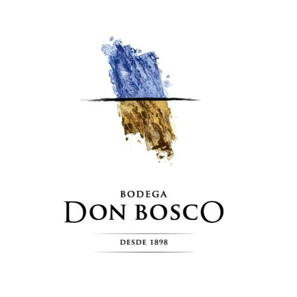

NOSOTROS
En esta pagina vas a encontrar mucha informacion sobre los mejores vinos de San Juan.
BODEGAS ASOCIADAS.



NOSOTROS
En esta pagina vas a encontrar mucha informacion sobre los mejores vinos de San Juan.